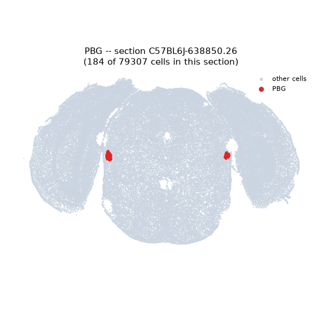
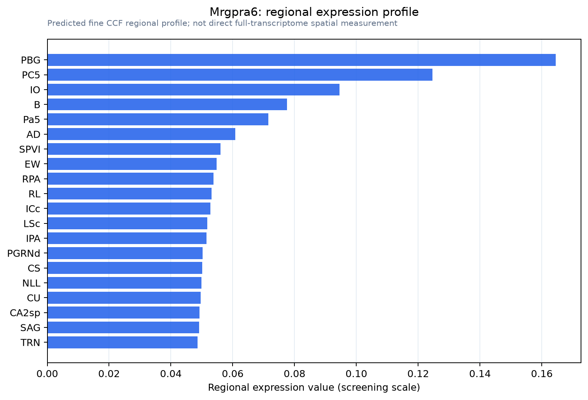

Mrgpra6
Mas-related G protein-coupled receptor member A6
Spatial tier: STRICT_EXCLUSIVE · Class: GPCR · Top region: PBG (Parabigeminal nucleus) · Positive regions: 6/554
44.4Discovery Score
34.6Targetability Score
CEvidence grade C
What this means: Mrgpra6: predicted fine-region profile is strict-exclusive, with 6 positive regions out of 554 (limit 12); direct spatial validation is required.
Function in PBG: evidence, prediction, innovation
- Gene function
- Mrgpra6 is a Mas-related GPCR in the rodent-expanded mouse chromosome 7 cluster, closest human relative MRGPRX3. Family members are Gq- or Gi-coupled receptors for peptides and cationic ligands mediating itch, nociception and pseudo-allergic mast cell degranulation. Mrgpra6 is basophil-restricted; knockout impairs early anti-helminth innate immunity, raising larval burden and mortality.
- Region function
- The parabigeminal nucleus (Ch8) is a cholinergic midbrain nucleus reciprocally linked to the superior colliculus, relaying visual information across hemispheres, sharpening SC surround inhibition and looming responses, and triggering freezing and escape.
- Published in this region
- inferred No region-specific literature found. Closest is Mrgpr-family expression mapping to small-diameter DRG and trigeminal sensory neurons and immune cells, explicitly not CNS, with Mrgpra6 only in blood and lung basophils (2026 basophil GPCR study).
- Predicted function
- Prediction: a genuine PBG signal would be the family's first CNS site; Gq coupling predicts depolarised cholinergic PBG neurons, more acetylcholine onto superficial SC and a lower escape threshold. Knockout or local antagonism should weaken looming-evoked defence without changing visual acuity. RNAscope with ChAT staining must first exclude contamination by sensory-like cells or blood basophils.
- Innovation
- ★★★★☆ 4/5 No Mrgpr has a known central function and the PBG is tool-accessible, but expression needs validation.
- Tools
- Mrgpra6 knockout mice (2026 basophil study); Mrgpr cluster-deletion mice; no selective agonist or antagonist; PBG access via Chat-IRES-Cre (JAX 006410) with Cre-dependent AAV for optogenetics or DREADDs.
- References
Direct evidence located at the region
No Allen ISH section could be located at this region's centroid for the recorded experiments.
Look it up yourself: Allen Mouse Brain ISH for Mrgpra6Allen reference atlas: PBG (structure 874)ABC Atlas MERFISH viewer(in the ABC Atlas choose dataset MERFISH-C57BL6J-638850-CCF, colour cells by gene "Mrgpra6" or by parcellation_substructure "PBG")All genes confined to PBG + 3-D brain
Direct spatial evidence
MERFISH REGION LOCATOR

Regional expression figure

Predicted WMB × fine-CCF profile; not direct full-transcriptome spatial measurement.
Spatial profile
Evidence and specificity
- Evidence status
- PREDICTED_FINE
- Direct sources
- None; predicted localization only
- Exclusive threshold
- 12 positive regions out of 554
- Spatial specificity
- 0.316
- Top-region fraction
- 0.097
- Filter status
- PASS
Interpretation limits
- Cell-type-to-region projection is imputed expression, not direct spatial measurement.
- Adult reference atlases do not establish stability across age, sex, strain, state, or disease.
- Transcript abundance does not guarantee protein abundance or genetic-tool performance.